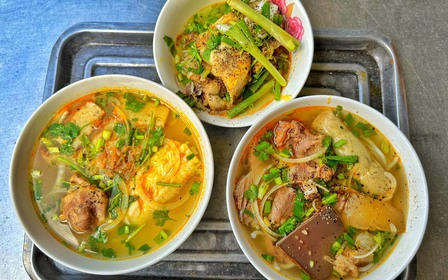

Quán bánh canh cá lóc O Thanh (Q.3, TP.HCM) vượt qua những ám ảnh Covid-19 đã chuyển sang mặt bằng mới buôn bán. Quán giờ ra sao?
Đời sống

Quán bánh canh cá lóc O Thanh ở TP.HCM đổi mặt bằng, vượt đau thương: Giờ ra sao?

Tổng biên tập: Nguyễn Ngọc Toàn
Phó tổng biên tập: Hải Thành
Phó tổng biên tập: Đặng Thị Phương Thảo
Phó tổng biên tập: Lâm Hiếu Dũng
Ủy viên Ban biên tập - Tổng Thư ký tòa soạn: Trần Việt Hưng
Giấy phép xuất bản số 110/GP - BTTTT cấp ngày 24.3.2020 © 2003-2023 Bản quyền thuộc về Báo Thanh Niên. Cấm sao chép dưới mọi hình thức nếu không có sự chấp thuận bằng văn bản.